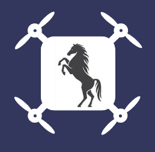

<div id="contenedor">
    <header>
        
        <h1>AsturDron</h1>
    </header>
    <app-inicio-sesion></app-inicio-sesion>
    <main id="contenido">
        <h2 class="titulo">Últimas noticias del mundo dron</h2>

        <app-noticias></app-noticias>

        <h2 class="titulo">Galería de vuelos</h2>

        <app-ocio></app-ocio>

        <h2 class="titulo">El tiempo esta semana en asturias</h2>

        <app-meteorologia></app-meteorologia>

    </main>

    <footer>
        <p>© Llarina Sanz Uría - AsturDron | ig: _llariisanzz_</p>
    </footer>
</div>